Fiches de spécialisation
Sources directes intégrées quand disponibles (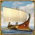
birèmes, 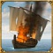
bateaux-feu, OFF/DEF terre), puis adaptation pour les rôles mythiques. Ouvre une fiche à la fois avec le bouton “Afficher / Masquer”.
Défense navale
Type: Ligne défensive mer
Référence source: Ville full birèmes
Objectif pop libre: très élevée
Ordre de construction (prioritaire)
- Ferme en premier: niveau 30, puis 40.
- Port niveau 20 minimum, puis 25+ en domination active.
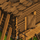
Scierie 30+ et mine d'argent 25+ pour production continue.- Académie niveau 30 pour débloquer les recherches navales complètes.
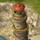
Phare dès que le port est stable.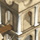
Entrepôt niveau 30+ pour absorber les grosses vagues de construction.- Marché niveau 15-20 pour alimenter le front naval.
Niveaux finaux conseillés (population optimisée)
- Ferme 45, Port 25-30, Académie 30, Entrepôt 30-35, Marché 15-20.
- Caserne basse (10-15) si la ville reste purement navale défensive.
- Temple bas (1-10) si pas de rôle mythique sur cette ville.
Recherches et compo repère
- Bélier, Cartographie, Constructeur naval, Mathématique, Céramique, Charrue.
- Compo repère: noyau birèmes (la source cite ~300 selon bâtiments).
Offensive navale
Type: Projection mer
Référence source: Ville full bateau-feu
Objectif pop libre: élevée
Ordre de construction (prioritaire)
- Ferme en premier: niveau 30, puis 40.
- Port niveau 25 rapidement, puis 30 (point clé de cette spécialisation).
- Marché niveau 20 minimum (présent dans la source).
- Scierie 32+ avec priorité bois pour enchaîner les bateaux-feu.
- Académie 28-30 pour les recherches navales.
- Phare pour le rendement opérationnel.
- Entrepôt 28-32 pour limiter les blocages logistiques.
Niveaux finaux conseillés (population optimisée)
- Ferme 45, Port 30, Marché 20+, Académie 28-30, Entrepôt 28-32.
- Rempart bas (1-10) et tour évitable pour garder de la population libre offensive.
- Temple bas sauf si la ville évolue en offensive mythique hybride.
Recherches et compo repère
- Bélier, Cartographie, Mathématique, Constructeur naval, Charrue.
- Compo repère: noyau bateaux-feu (la source cite ~220).
Défense terrestre
Type: Mur de soutien alliance
Référence source: Ville DEF terrestre
Objectif pop libre: haute
Ordre de construction (prioritaire)
- Ferme en premier: niveau 35, puis 45 en fin de template.
- Caserne niveau 20 minimum pour cadence de troupes.
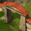
Rempart niveau 25, puis 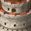
Tour.- Académie niveau 30 pour la base complète de recherches défensives.
- Entrepôt 30+ pour tenir les renforts et la logistique de guerre.
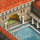
Thermes si ville active sur déplacements défensifs.- Port 15-20 pour les transports défensifs utiles.
Niveaux finaux conseillés (population optimisée)
- Ferme 45, Caserne 20+, Rempart 25, Tour active, Académie 30.
- Marché 15-20 et Entrepôt 30-35 pour soutien long conflit.
- Temple 1-10 si la ville ne porte pas de rôle mythique.
Recherches et compo repère
- Bélier, Cartographie, Phalange, Charrue, Instructeur, Conscription, Couchette.
- Compo repère issue de la source:
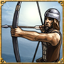
archers + 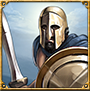
épéistes + 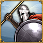
hoplites + 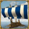
support naval.
Offensive terrestre
Type: Ville de conquête
Référence source: Ville OFF terrestre
Objectif pop libre: maximale
Ordre de construction (prioritaire)
- Ferme en premier: niveau 35 puis 45.
- Caserne niveau 20 minimum pour production lourde.
- Académie niveau 30 pour conquêtes et recherches offensives.
- Port niveau 20 minimum pour les transports rapides et appuis.
- Marché niveau 20 pour maintenir la cadence d'attaque.
- Thermes pour mobilité offensive.
- Mine d'argent 30+ pour soutenir le coût des unités terrestres.
Niveaux finaux conseillés (population optimisée)
- Ferme 45, Caserne 20-25, Académie 30, Port 20-25, Marché 20.
- Rempart bas (1-10) sur une ville pure OFF pour conserver la population utile.
- Temple 1-10 si non mythique, sinon migrer vers template OFF mythique.
Recherches et compo repère
- Phalange, Charrue, Instructeur, Conscription, Cartographie, Transport rapide, Couchette, Conquête.
- La source propose plusieurs templates OFF; garde un template unique par ville pour standardiser.
Offensive unités mythiques
Type: Burst offensif
Base: adaptation gameplay mythique
Objectif pop libre: maximale
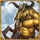
Exemple: Minotaure
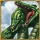
Exemple: Hydre
Ordre de construction (prioritaire)
- Ferme en premier: niveau 40 puis 45 (indispensable pour unité mythique + support).
- Temple niveau 20 rapidement, puis 25-30 selon intensité mythique.
- Académie niveau 28-30 pour débloquer les synergies offensives.
- Caserne niveau 20 pour compléter les vagues mixtes.
- Marché niveau 20 pour soutenir la conso de ressources.
- Port niveau 20 pour projection et synchronisation.
- Mine d'argent 30+ pour stabiliser les coûts de production.
Niveaux finaux conseillés (population optimisée)
- Ferme 45, Temple 25-30, Académie 30, Caserne 20, Port 20, Marché 20.
- Rempart volontairement bas si ville purement offensive.
- Limiter les bâtiments sans impact direct (ex: défense passive lourde).
Conseils d'exploitation
- Choisir un dieu principal et spécialiser la ville sur 1
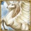
unité mythique dominante.
- Ne pas disperser la faveur sur trop de villes: concentrer le rôle mythique.
- Coupler la ville avec une OFF terrestre pour les vagues mixtes.
Défense unités mythiques
Type: Holding défensif avancé
Base: adaptation gameplay mythique
Objectif pop libre: haute
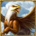
Exemple: Griffon
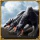
Exemple: Cerbère
Ordre de construction (prioritaire)
- Ferme en premier: niveau 40 puis 45.
- Temple niveau 25 minimum pour soutenir la défense mythique.
- Rempart niveau 25 puis Tour.
- Caserne niveau 20 pour la base défensive terrestre.
- Académie niveau 30 pour débloquer les options défensives.
- Entrepôt niveau 30+ pour tenir les phases de siège.
- Port 15-20 pour transport de renforts et couverture navale.
Niveaux finaux conseillés (population optimisée)
- Ferme 45, Temple 25-30, Rempart 25, Tour active, Caserne 20, Académie 30.
- Marché 15-20 et Entrepôt 30-35 pour éviter les ruptures logistiques.
- Limiter l'OFF navale lourde sur cette ville pour garder le rôle défensif net.
Conseils d'exploitation
- Spécialiser la défense mythique sur un seul dieu défensif principal.
- Conserver une réserve de faveur permanente avant les pics de guerre.
- Combiner avec une DEF navale proche pour tenir les ports sensibles.